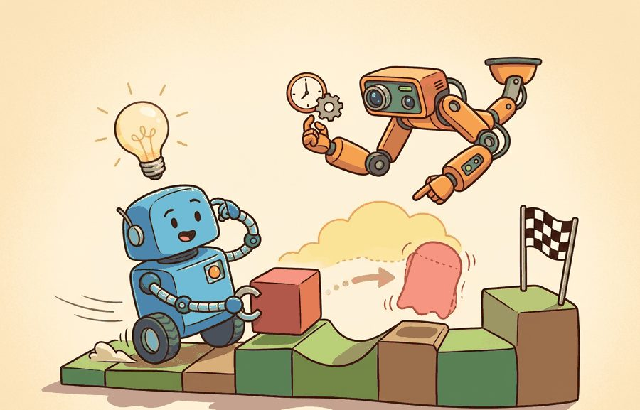
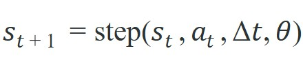
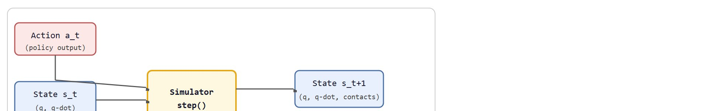

"The first bug in a robot simulator is usually a promise nobody wrote down."
A Constraint-Checking AI Agent

This section assumes familiarity with rigid-body dynamics from section 6.2 and the agent-environment loop from section 2.1. If you are already comfortable with how integrators and constraint solvers work, you can skim to section 11.2 for simulator-specific design tradeoffs. The physical modeling concepts introduced here recur in Part III alongside domain randomization in section 13.1 and GPU-parallel rollouts in section 12.1.
A robot hand trained on ten million simulated grasps can fail the moment it touches a real object, not because the neural network is wrong, but because the simulator never modeled friction correctly. That gap between virtual and physical is the central engineering problem of embodied AI right now, and closing it starts with understanding exactly what a simulator does and does not promise.
As Figure 11.1A signals, a simulator earns trust only when state, action, contact, observation, and validation evidence form a single contract rather than separate concerns. A physics simulator advances a state through time by applying forces, constraints, contacts, and actuator commands. It then exposes part of that state as observations for the agent loop from Chapter 2. Every modeling choice inside that update (integrator, contact solver, friction cone, sensor noise) can seed sim-to-real error. This section maps those choices explicitly, shows which ones matter most for locomotion versus manipulation, and builds the mental model needed to evaluate MuJoCo, Isaac Lab, and Genesis on their own terms in the sections ahead.
A simulator answers a question: given the current state $s_t$, an action $a_t$, and a time step $\Delta t$, what state should come next? For rigid-body robotics, the state usually includes body poses, velocities, joint positions, joint velocities, actuator states, and contacts. The update can be summarized as:

The parameters $\theta$ contain masses, inertias, joint limits, friction coefficients, damping, solver tolerances, sensor noise, and contact settings. This equation looks compact, but each term is a modeling choice that can decide whether a learned policy transfers to reality. Figure 11.1B traces this update visually: it shows how the current state, the agent action, and the parameters $\theta$ all flow into the step() call, which then emits both the next state and the observation the agent actually receives.

The solver settings deserve special attention because they are not cosmetic. Timestep, integrator choice, constraint softness, contact margin, and solver iteration count decide how much penetration, bounce, jitter, and energy drift the simulator permits. A good experiment records these values next to the policy checkpoint because changing them can change the learned behavior as much as changing a reward term.
Input: current state $s_t = (q, \dot{q}, x_\text{contacts})$, action $a_t \in \mathcal{A}$, timestep $\Delta t$, model parameters $\theta$ (masses, inertias, friction $\mu$, solver tolerances)
Output: next state $s_{t+1}$, observation $o_{t+1}$
So far: the algorithm has turned an action into generalized forces, solved for free-space acceleration, detected which bodies touch, and cast the touching pairs as a constraint problem that a solver satisfies iteratively; the remaining steps just integrate that solved state forward and turn it into what the agent observes.
| Component | What it means | Why it matters for action | Common failure |
|---|---|---|---|
| Bodies | Rigid or deformable objects with mass and inertia | Determines acceleration, impact, and balance | Incorrect inertia makes policies learn unrealistic motion |
| Joints | Allowed motion between bodies | Defines the action space and robot kinematics | Wrong axis or limit creates impossible behaviors |
| Contacts | Collision points and constraint forces | Controls grasping, walking, pushing, and sliding | Contact jitter hides real failure modes |
| Friction | Resistance to sliding or rolling | Decides whether a grasp holds or a foot slips | Over-tuned friction makes sim easier than reality |
| Sensors | Observed signals derived from state or rendering | Creates the partial observability seen by the agent | Perfect sensors inflate evaluation scores |
The most useful simulator is not the one with the longest feature list. It is the one whose simplifications you can name, measure, and include in the evaluation plan. This is the bridge from Chapter 9 to the transfer work in Chapter 13.
Sensor modeling matters because real hardware is noisy. Encoders have quantization noise, IMUs drift, and force-torque sensors saturate at impact. A policy trained on perfect joint-angle readouts learns to memorize exact numbers instead of estimating state robustly. The sensor model in simulation is the only barrier between that brittle behavior and one that generalizes. Locomotion policies that train on noiseless velocity feedback often freeze or oscillate on hardware, because their first real observation falls outside the distribution they trained on.
Mechanically, a simulator computes the true state each step and then applies a sensor transfer function. That function selects the relevant state variables, applies any calibrated bias, adds sampled Gaussian or uniform noise, clips to the sensor range, and optionally adds a one-step delay to match real hardware latency. The agent receives the resulting observation vector, not the ground-truth state. Adding even modest noise (standard deviation 0.01 rad on joint positions) during training forces the policy to average across uncertainty, producing behavior that generalizes to real sensors.
Practitioner reports and post-mortems on sim-to-real transfer failures across locomotion and manipulation tasks commonly cite noisy or mismatched sensor models as a leading, though typically not precisely quantified, contributor when a policy performs well in simulation but degrades immediately on hardware, often alongside contact parameter mismatch rather than clearly ahead of it. Treat any specific percentage attributed to a single failure category with skepticism unless it is tied to a named benchmark and methodology.
Sensors only matter once there is a state to observe, so before tracing how a full simulator produces that state through articulated dynamics and contact solving, it helps to watch the bare update loop in miniature.
Code Fragment 1 below implements a tiny one-dimensional contact model with NumPy. It is not a replacement for a simulator. Its purpose is to make the contract visible: integration, gravity, floor contact, and friction are separate modeling decisions.
# Minimal physics stepper: integrate a falling block with floor contact.
# NumPy is used only for clear scalar math and reproducible arrays.
# The output shows how contact and friction change state over time.
import numpy as np
height = 0.20
velocity = -0.10
dt = 0.02
gravity = -9.81
restitution = 0.25
floor_height = 0.0
trajectory = []
for step in range(8):
velocity = velocity + gravity * dt
height = height + velocity * dt
if height < floor_height:
height = floor_height
velocity = -restitution * velocity
trajectory.append((step, round(height, 4), round(velocity, 4)))
for row in trajectory:
print(row)(0, 0.1941, -0.2962) (1, 0.1842, -0.4924) (2, 0.1705, -0.6886) (3, 0.1528, -0.8848) (4, 0.1312, -1.081) (5, 0.1057, -1.2772) (6, 0.0762, -1.4734) (7, 0.0428, -1.6696)
Trace through the stepper for a single step using actual numbers, starting from a block already near the floor: height = 0.0050 m, velocity = -1.50 m/s, dt = 0.02 s, gravity = -9.81 m/s^2, restitution = 0.25, floor at 0.0.
Step 1, update velocity: velocity = -1.50 + (-9.81)(0.02) = -1.50 - 0.1962 = -1.6962 m/s. Gravity acted first, so the new velocity is used for the position update (this is what makes it semi-implicit, not plain Euler).
Step 2, update height: height = 0.0050 + (-1.6962)(0.02) = 0.0050 - 0.03392 = -0.02892 m. The block has integrated straight through the floor, which is exactly the interpenetration a real solver must prevent.
Step 3, detect contact: height (-0.02892) is below floor_height (0.0), so a contact is active. Clamp the position: height = 0.0 m.
Step 4, apply restitution: velocity = -(0.25)(-1.6962) = +0.4241 m/s. The block now moves upward at one quarter of its impact speed, having lost 75 percent of its kinetic energy proxy at the bounce. Notice the energy loss is decided entirely by the single number restitution = 0.25, which is the whole contact model here.
Code Fragment 1 uses about 20 lines to teach the state update. In practice, MuJoCo reduces the same rigid-body stepping pattern to a model load plus repeated mj_step calls, while handling articulated bodies, constraints, contacts, actuator dynamics, sensors, and solver settings internally. The hand-built stepper remains useful because it teaches what to inspect when a full simulator behaves strangely.
The toy stepper above bounced a single block off a flat floor with one restitution number, but that lone clamp-and-reflect step is precisely the part that explodes in complexity once real geometry, friction, and many simultaneous contacts enter the picture.
Free-space motion is usually not where robot simulation becomes surprising. Contact is harder because the simulator must prevent interpenetration, estimate collision points, solve constraint forces, approximate friction cones, and remain numerically stable, making contact the primary source of sim-to-real error. A grasp that succeeds in simulation because friction is too generous is not a robot skill. It is a measurement error. A policy that works in simulation but fails on hardware is not a policy: it is an inventory of the simulator's concessions.
Most engines therefore expose a contact model, not a single truth about contact. Stiff contacts cut visible penetration but invite jitter and smaller stable timesteps; soft contacts smooth training but hide impact failures. The validation question is concrete: as friction, restitution, timestep, and solver iterations move within plausible ranges, does the same policy still satisfy the task metric?
Consider a specific case: a gripper policy trained in MuJoCo with a table friction coefficient of 1.0 and a contact solver running 20 iterations at a 5 ms timestep. Moving to the real robot, the measured rubber-on-ABS friction is 0.55 and the controller runs at 8 ms. In simulation the object stays put under a 2 N lateral force; on hardware the same force slides it 3 cm before the gripper reacts. The policy succeeds in simulation because the contact model was more forgiving than the real surface, not because the grasp strategy was robust. Recording the friction value and timestep alongside the policy checkpoint would have flagged the mismatch before the hardware trial.
Think of the contact constraint problem like stacking books on a table. Each book cannot pass through the surface below it, and the table pushes back with exactly as much force as needed to keep it in place, never more. If you then slide one book sideways, the friction between covers either holds it (force inside the cone) or lets it slip (force at the cone boundary). The solver does the same negotiation for every contact point simultaneously: it finds the smallest set of forces that prevents any object from sinking into another while keeping every friction force within its permitted range. There is no single formula for the answer because each contact point's force depends on all the others, so the solver iterates, adjusting estimates until the whole stack is consistent.
When two bodies overlap at the end of an integration step, the simulator computes constraint forces that push them apart without violating friction limits. Most engines formulate this as a linear complementarity problem (LCP): find contact forces such that penetration is zero and friction forces stay inside a cone defined by the friction coefficient. Solvers approximate this cone with a polygon (typically 4 or 8 sides in MuJoCo) and iterate until residual falls below a tolerance. The number of iterations and the cone approximation are the two settings that most directly control whether a simulated grasp is physically plausible or just numerically convenient.
Choose the simulator by the physical mechanism being tested: contact stiffness, friction cone behavior, actuator limits, sensor timing, and reset semantics matter more than benchmark reputation.
If a policy only works when contact parameters are tuned to a narrow value, the simulator is not validating the policy. It is training the policy to exploit the simulator. This is why later chapters treat domain randomization, system identification, and real-world evaluation as part of one workflow.
A common assumption is that a physics simulator reproduces the full physical world and that a successful simulation result therefore implies the robot will behave correctly on hardware. This is wrong because every simulator models only a named, finite set of phenomena: rigid-body dynamics, a small set of joint types, an approximate contact and friction model, and a simplified sensor transfer function. Phenomena such as cable flex, motor heating, joint backlash, soft-body deformation, aerodynamic drag, and electrical noise are absent unless explicitly added. In embodied AI the correct mental model is that simulation success means the agent solved the task under the modeled phenomena only; whether those phenomena cover what matters on the real platform is a separate question that requires the practical recipe in this section and the domain randomization work in Chapter 13.
For a tabletop pushing task, do not start by asking whether Isaac Lab or MuJoCo is faster. Start by asking whether object mass, table friction, contact geometry, camera pose, and action frequency match the task. Once those are written down, speed becomes meaningful because you know what the simulator is accelerating.
Expected output: A simulator report for this section should include the state variables, the observation mapping, the contact parameters, the solver settings, and a perturbation table showing whether the policy remains stable under plausible physics changes.
Boston Dynamics trains and tunes much of Spot's dynamic locomotion controllers in a rigid-body simulator before deploying to hardware, where the modeled phenomena (joint torque limits, foot-ground contact, friction, and inertial coupling between legs and body) are precisely the contract this section describes. The team's published reality-gap practice mirrors the recipe here: they identify which contact and actuator parameters actually drive falls on real terrain and randomize those, rather than trusting any single simulated friction value.
A simulator is a promise about the next state. The debugging trick is to ask which promise failed: the body model, the contact model, the sensor model, or the solver that glued them together.
Pick a task from your own work. Can you name the three physical parameters that would most change the outcome? If the answer is no, the simulator choice is premature.
Modify Code Fragment 1 so the block starts with a horizontal velocity and loses 10 percent of that velocity every time it touches the floor. Explain which line represents a friction approximation and which line represents a contact approximation.
Active research directions (2024-2026):
Differentiable simulation for contact-aware policy gradients. Genesis (Zhou et al., Genesis: A Generative World for General-Purpose Robotics, NeurIPS 2024) demonstrated that differentiable rigid-body and soft-body solvers can pass analytic contact gradients back through the physics step; in their reported benchmarks, this reduced the number of environment interactions needed to learn a stable grasp by an order of magnitude compared to black-box reinforcement learning (RL) baselines. To make that concrete: a task that required 50,000 rollouts under standard RL converged in roughly 300 rollouts when the solver could back-propagate through contact, because each gradient step now carried information about how the contact force itself would change if the policy acted differently. Google DeepMind's MJX (MuJoCo on JAX, 2024) pursues the same idea inside the MuJoCo contact model, enabling gradient-based tuning of friction and stiffness parameters on GPU at scale.
Simulator-as-world-model for online adaptation. Rather than fixing contact parameters before training, several 2024-2025 efforts treat the simulator as a continuously updated world model that assimilates real sensor data between hardware trials. NVIDIA's Isaac Lab 2.0 (2025) added a system-identification loop that fits per-object mass and friction from on-robot force-torque measurements in real time, narrowing the distribution mismatch before the next rollout rather than after.
Sim-to-real for deformable and soft-body objects. Rigid-body simulators cannot accurately model cloth, foam, cables, or biological tissue. PhysGaussian (Xie et al., CVPR 2024) combines 3D Gaussian splats with material point method (MPM) physics so a simulator can reconstruct and simulate object deformation from a short RGB-D scan. The Berkeley Robot Learning Lab and Stanford IRIS Lab are using this direction to train manipulation policies on objects whose stiffness and damping vary across instances, a scenario where rigid-body approximations break down immediately.
Open problem for a PhD student: No principled method yet exists for automatically discovering which subset of simulator parameters (from the full set of masses, friction coefficients, damping terms, contact margins, and integrator settings) must be matched to the real system to guarantee policy transfer, versus which can be left at default values without measurable effect on hardware success rate. A rigorous sensitivity analysis framework that certifies a "minimal calibration set" per task class, validated across at least three real robot platforms, would immediately benefit every group working on sim-to-real transfer.
Goal: Feel, empirically, how a single contact parameter flips a simulated outcome between success and failure, which is the core claim that contacts are the hard part.
Tools needed: Python 3, the mujoco pip package (version 3.x ships its own viewer), and the bundled franka_emika_panda or any gripper model from mujoco_menagerie. About 15 to 30 minutes.
Setup: Load a model with a gripper holding a box resting on a table. Run a short closed-loop episode where the gripper closes and then lifts the box 10 cm.
What to vary: Sweep the table-and-box sliding friction in the MJCF geom (MJCF, MuJoCo's XML model format, is where each body's geometry and physical properties are declared; see Section 11.2) (the first entry of the friction attribute) across 0.2, 0.4, 0.6, 0.8, and 1.0. Hold everything else fixed. For one extra run, also change the solver iterations from 20 down to 5.
What to observe: Record the final box height after the lift at each friction value, and note the friction threshold below which the box slips out of the grasp. Plot height versus friction. You should see a sharp transition, not a gradual slope, and the low-iteration run should make the contact jitter or let the box squirt out earlier. That cliff is the reality-gap risk: if your real surface sits on the wrong side of it, the policy that "worked" in simulation will drop the object.
A physics simulator is a state-transition model plus a sensor model plus an error budget. If you cannot describe all three, you are not ready to interpret the result.
Beginner (weekend): Build a Gymnasium environment that wraps Code Fragment 1's contact stepper, exposes height and velocity as observations, and rewards a random policy for keeping a bouncing block above 0.05 m for 50 steps. The key challenge is writing a reset() that randomizes restitution between 0.1 and 0.5 so the agent cannot memorize a single bounce trajectory.
Intermediate (1-2 weeks): Use MuJoCo and the mj_step API to train a Franka Panda gripper to pick up a cube, then run a parameter sweep over table friction (0.3 to 1.2) and solver iterations (5, 10, 20) and record how often the same policy succeeds at each setting. The key challenge is building the perturbation harness that logs contact parameters alongside each rollout so you can produce a transfer-gap table rather than a single success rate.
Section 11.2 turns this physics contract into concrete MuJoCo models written in MJCF or imported from URDF.
Tedrake, R. (2024). Underactuated Robotics.
This open textbook gives the dynamics and control background needed to reason about simulated bodies and contacts. Readers who want deeper mathematical treatment of Chapter 6 and this section should keep it nearby.
This paper explains the simulator design that made MuJoCo important for model-based control and robot learning. It is the best starting point for readers who want the mechanics behind constraints, contact, and control-oriented simulation.
Google DeepMind. "MuJoCo Computation Documentation."
The computation docs describe the pipeline from model data to constraints, sensors, and stepping. They are directly relevant when a reader wants to connect this section's simplified stepper to a production simulator.
Drake Development Team. "Drake Documentation."
Drake provides a rigorous systems view of dynamics, simulation, planning, and control. It is useful for readers who want to see physics simulation embedded inside a larger model-based design workflow.
Open Robotics. "Gazebo Documentation."
Gazebo documentation is relevant when the simulator must connect to robot middleware and sensor plugins. Readers focused on ROS 2 integration should compare these docs with the lower-level physics view in this section.